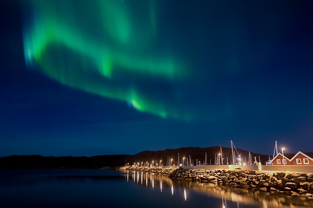
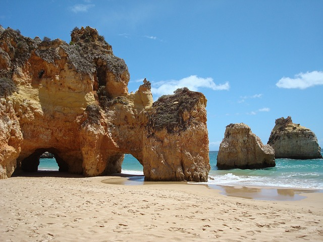
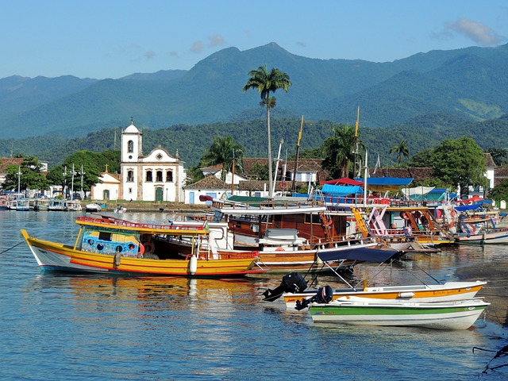

Mes derniers voyages
Tromsø, Norvège

Tromsø, la perle de l'Arctique
Située au cœur du cercle polaire, Tromsø est un mélange parfait de nature sauvage et de culture nordique. En hiver, ses aurores boréales magiques et ses aventures en traîneaux à chiens ou motoneige fascinent les visiteurs.
Côté culture, découvrez les musées sur la vie arctique et dégustez des plats locaux comme le renne ou le crabe royal. Avec son ambiance chaleureuse et ses paysages à couper le souffle, Tromsø est une escapade unique au bout du monde.
Algarve, Portugal

L'Algarve, un coin de paradis au Portugal avec ses falaises dorées, ses plages idylliques et ses villages pittoresques, l'Algarve est une destination de rêve. Au sud du Portugal, cette région offre des paysages variés, parfaits pour se détendre ou explorer.
Entre les criques secrètes de Lagos, les grottes marines de Benagil, et les eaux turquoise de la côte, les amoureux de la mer seront comblés. Côté terre, les villages comme Tavira ou Silves révèlent l'histoire et le charme authentique
Ajoutez à cela un climat doux toute l'année et une cuisine savoureuse – pensez aux sardines grillées et pastéis de nata – et l'Algarve devient une invitation irrésistible
Paraty, Brésil

Paraty, le trésor colonial du Brésil
Située entre Rio de Janeiro et São Paulo, Paraty est une ville qui semble figée dans le temps. Ses rues pavées, ses maisons blanches aux volets et colorées ses églises historiques vous plongent directement dans l'époque coloniale.
Côté culture, la ville s'anime lors de festivals comme la célèbre Fête Littéraire Internationale de Paraty (FLIP), attirant des visiteurs du monde entier. Avec son ambiance chaleureuse, sa beauté naturelle et son riche patrimoine, Paraty est une étape incontournable au Brésil.